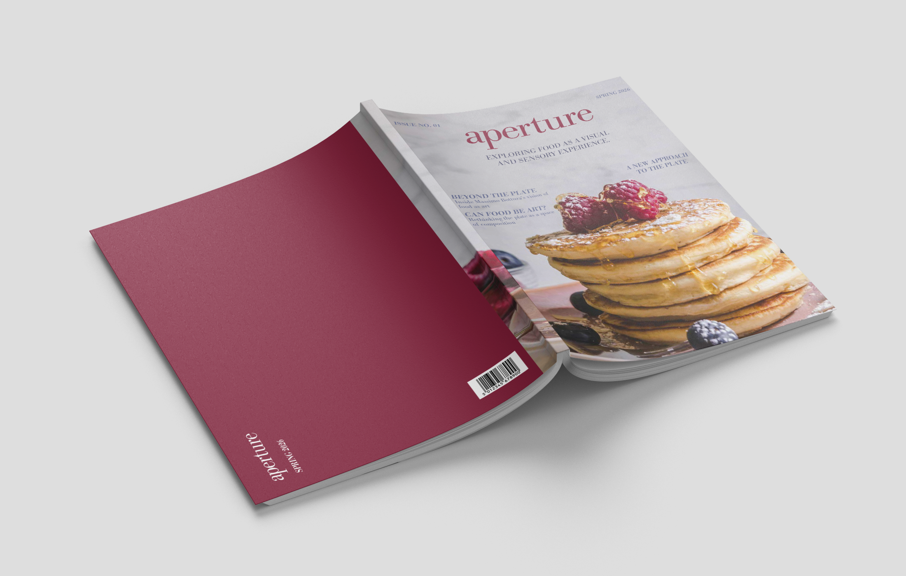
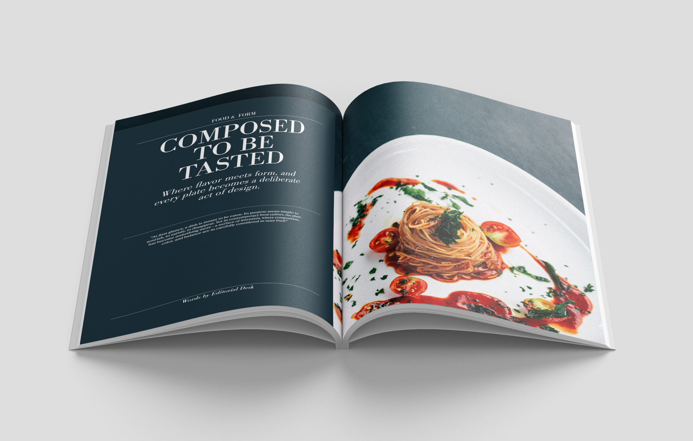
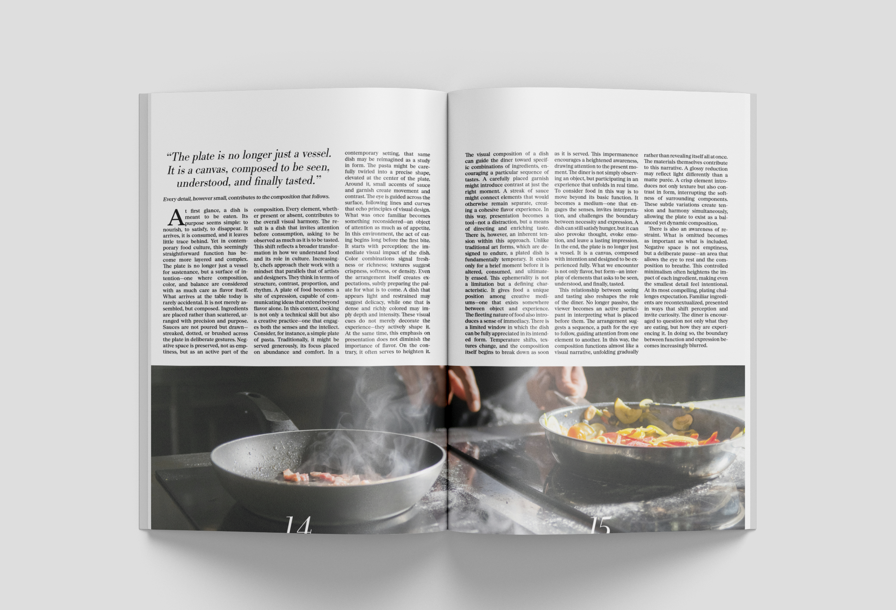

Editorial Design
An editorial design project focused on typography, pace, hierarchy, and visual balance.

This project investigates how typography and spacing can guide rhythm within editorial design. Through structured grids, image placement, and intentional negative space, the layouts aim to create a reading experience that feels both immersive and restrained. The visual system prioritizes clarity while allowing moments of tension and contrast to shape the narrative flow.

